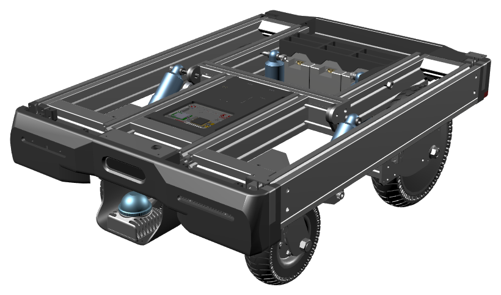

動く板アドベンチャー in UEC
Ugokuita Adventure in UEC
- ブラウザでそのまま遊べる！
- 舞台は電気通信大学！
動く板は、電気通信大学の有志の学生が開発している自動運転AGVです。
ブラウザで遊ぶ ▶※ 初回は読み込みに少し時間がかかります。
操作方法
キーボード
- W / S：前進 / 後退
- A / D：ハンドル
- 矢印キー：視点移動
コントローラ
- RT / LT：前進 / 後退
- 左スティック：運転・ハンドル
- 右スティック：視点移動
スマホ（タッチ）
- 1本指スワイプ：運転
- 2本指スワイプ：視点移動